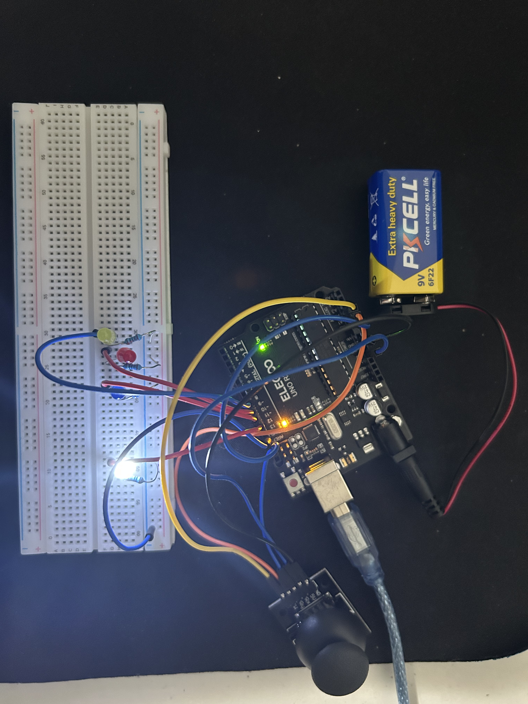
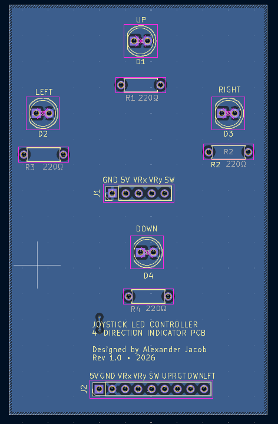
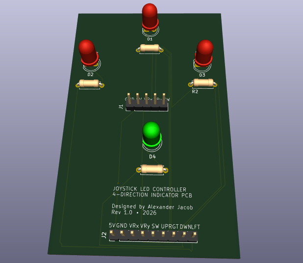

Joystick-Controlled 4-Direction LED PCB
From Arduino Breadboard Prototype to Custom KiCad PCB
Project Overview
I designed and tested a four-direction LED indicator controlled by a two-axis joystick. The project began as a physical ELEGOO UNO R3 breadboard prototype and was then translated into a complete KiCad schematic and custom PCB design. Each joystick direction activates a dedicated LED through a consistent 1kΩ current-limiting resistor value used across the physical circuit build because a 220Ω resistor was not available at the time.
Working Prototype
The ELEGOO UNO R3 reads the joystick's X and Y analog outputs and determines the direction of movement. Based on the detected direction, the corresponding UP, DOWN, LEFT, or RIGHT LED is activated using the same resistor value throughout the physical circuit.
Physical Prototype

Circuit Schematic
The schematic contains four independent directional LED output branches, each using a consistent 1kΩ current-limiting resistor value matching the real physical prototype build. The joystick interface exposes 5V, GND, VRx, VRy, and SW signals, while the ELEGOO UNO R3 header carries the joystick signals and directional LED outputs.
PCB Design

After completing the schematic, I assigned through-hole footprints, arranged the components in a directional layout, routed the copper traces, and added a ground plane. The physical LED placement corresponds to the UP, DOWN, LEFT, and RIGHT joystick directions.
3D PCB Visualization

Design Verification
- ✓ 0 DRC Violations
- ✓ 0 Unconnected Items
KiCad's Design Rules Checker was used to verify routing, connectivity, clearances, and board geometry before finalizing the design.
Engineering Process
-
1Prototype Built and wired the Arduino breadboard circuit.
-
2Test Verified joystick readings and directional LED behavior.
-
3Schematic Recreated the circuit in KiCad.
-
4Footprints & Placement Assigned through-hole footprints and positioned the components.
-
5Routing Routed signal traces and added the GND copper plane.
-
6Verification Ran ERC and DRC checks.
-
73D Review Inspected the finished PCB using KiCad's 3D Viewer.
Skills Demonstrated
What I Learned
This project gave me experience moving beyond breadboard prototyping into a complete PCB design workflow. I learned how schematic connectivity translates into physical copper routing, how footprint and component placement affect board layout, how ground planes simplify routing, and how ERC and DRC tools can identify design errors before manufacturing. It also reinforced how practical component availability affects a real build, since the physical prototype used a consistent 1kΩ resistor value across all LED branches because a 220Ω resistor was not available at the time.